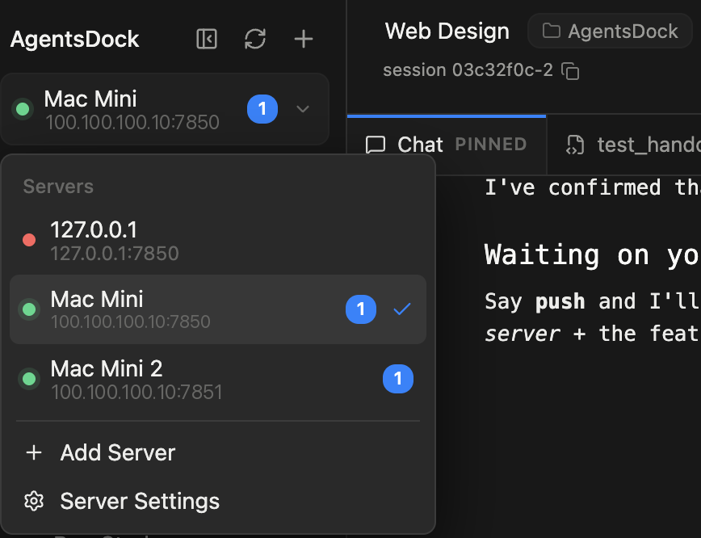
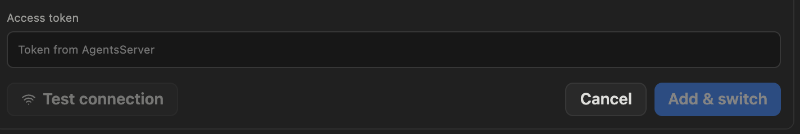
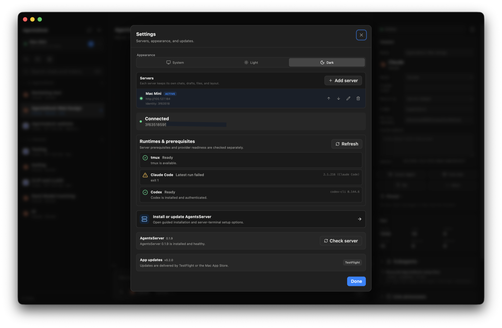

文档
搭建指南
- AgentsServer 在你自己的远程机器上执行实际工作。
- AgentsDock 客户端运行在你的设备上并连接到这台服务器；远程机器搭建一次，之后想连多少设备都可以。
开始之前
- 一台由你掌控的远程机器（Linux，或 Apple silicon Mac）来运行服务器，已安装 Node.js 22.14 或更高版本及 npm。
tmux是可选的，只有应用内终端需要它。 - 服务器机器上已安装
uv。它管理服务器的 Python 环境和依赖，AgentsDock 不会自动安装它。具体步骤见下方的先安装 uv。 - 一个 Tailscale 账号（强烈推荐）。设备和服务器不在同一 Wi-Fi 或局域网时，需要使用 Tailscale，除非你已有能让设备访问服务器的 VPN 或私有网络。同一局域网内可以直接使用服务器的局域网 IP。
- 在远程机器上安装你计划使用的 provider 对应的 CLI 命令行工具：Claude Code、Codex、OpenCode、Cursor 或 Gemini。各 provider 的配置方式见连接 agents。
- 一台能运行 AgentsDock 客户端的设备：macOS、Windows、Linux、iPhone、iPad 或 Android。
AgentsDock 是完全自托管的。你的会话、文件和 API 密钥都留在你的远程机器上——应用只是一个查看窗口。
第一步搭建远程机器
在负责执行工作的那台机器上做一次即可。它会持续运行，你的各个设备都连接到它。
1安装 AgentsServer
先安装 uv。只有运行服务器的机器需要它，手机或只用作客户端的电脑不需要。macOS 已安装 Homebrew 时，运行：
brew install uv
uv --versionLinux 或其他安装方式请参考 uv 官方安装指南。在同一个终端里确认 uv --version 能打印版本号，再继续下一步。
然后在远程机器上，用将要运行服务器的用户安装 AgentsDock CLI：
npm install -g agentsdock在一台新机器上，这个命令也会创建并启动默认服务器。标准安装不需要 clone repo。不要使用 sudo。
npm 可能隐藏安装成功时的提示。安装时使用 npm install -g agentsdock --foreground-scripts 可以显示这些信息。已发布的 1.0.10 CLI 只打印简短摘要，不会直接展示安装器的完整输出或 token。
agentsdock: Setting up your first AgentsDock server. This may take a few minutes.
agentsdock: Server 1.0.10 is ready at http://100.100.100.12:7850. Open AgentsDock to connect. Use agentsdock token to view/copy its private token.服务器默认监听 7850 端口，并在远程机器上持续运行——你的设备连接的就是它。
安装结束后，确认 default 的状态是 running，并查看连接地址：
agentsdock listNAME STATUS PORT
default running 7850
Tailscale / other networks: http://100.100.100.12:7850 (recommended)
Same Wi-Fi / LAN: http://192.168.1.23:7850
This machine only: http://127.0.0.1:7850同一局域网内使用 LAN 地址，跨网络时使用私有 Tailscale 网络中的地址。127.0.0.1 只能在服务器本机使用。
单独查看默认服务器的 token，并妥善保管：
agentsdock token defaultAccess token (default):
ad_tok_EXAMPLE_ONLY_DO_NOT_USE
Copy token to this machine's clipboard? [y/N]只把你自己的真实 token 粘贴到应用中。通过 SSH 或终端不支持剪贴板时，请手动复制 token 那一行。
2连接你的 agent provider
安装并登录你要让 AgentsDock 使用的提供方 CLI：Claude Code、Codex、OpenCode 或 Cursor。按提供方支持的正常方式登录即可，例如浏览器登录或配置 API key。自定义 endpoint 的配置见连接 agents。
Gemini 使用 API 连接，而不是 Google 账号或 CLI 登录。服务器上仍需安装兼容版本的 Gemini CLI 命令行工具。按照连接 Gemini API中的说明安装，并在桌面客户端配置 API key。
3在远程机器上安装 Tailscale
强烈推荐。设备和服务器不在同一 Wi-Fi 或局域网时，需要使用 Tailscale，除非你已有能连通两端的 VPN 或私有网络。使用已有的网络时可以跳过这一步；如果两端在同一局域网内，也可以直接使用服务器的局域网 IP。
在远程机器上安装 Tailscale 并登录。这会给机器分配一个私有的 100.x.x.x 地址，你的其他设备可以从任何地方访问它——无需向公网开放任何端口。记下这个地址（或机器的 Tailscale 主机名），第二步会用到。
有不止一台机器？在每台机器上重复第一步。AgentsDock 可以同时保存多个服务器——它们都会出现在侧边栏顶部的服务器菜单里，一键即可切换。

第二步从你的设备连接
在你想作为 AgentsDock 客户端使用的每台设备上重复以下步骤。
1下载 AgentsDock 客户端
到下载区选择你的平台（macOS、Windows、Linux、iPhone、iPad 或 Android），下载并打开客户端。
2在设备上安装 Tailscale
跨 Wi-Fi 或局域网连接时，强烈推荐使用 Tailscale。选择 Tailscale 后，在这台设备上也安装它，并用与服务器相同的账号登录，两端都保持连接。只有当两端在同一局域网内，或你已有能让这台设备访问服务器的 VPN 或私有网络时，才可以跳过这一步。
3连接到你的服务器
在 AgentsDock 中添加服务器，填入远程机器的地址——它的 Tailscale 100.x.x.x 地址加端口 7850——然后把第一步得到的 token 粘贴到token字段。它长这样：
ad_tok_9f3b7c2e•••••••••••••••••••• (sample)这个 token 存放在你的服务器机器上——也就是第一步搭建的远程机器，而不是你正在用来连接的设备。想再次获取，在远程机器上运行：
agentsdock token default点击测试连接（Test connection）确认应用能连到服务器，再点添加并切换（Add & switch）。连接成功后：新建一个会话，选择一个提供方，并指定远程机器上的一个工作目录。


要连接不止一台机器？用同样的方法逐个添加——打开侧边栏顶部的服务器菜单，选择 Add Server。之后你随时可以在该菜单里切换服务器。
排查问题
uv 未安装或无法运行
如果安装时提示 A trusted uv installation is required on PATH.，表示 uv 未安装、不在 PATH 中，或无法运行。请安装 uv，在同一个终端里确认 uv --version 正常，再重试并显示状态信息：
npm install -g agentsdock --foreground-scripts这个前置依赖错误不需要修改配置或删除文件。如果 uv 正常后安装仍失败，请通过问题反馈提供新的诊断输出，并移除 token 等凭据。
连不上？
- 确认在同一台设备的浏览器里能打开服务器 URL——浏览器打不开的话，应用也连不上。
- 检查两端的 Tailscale 都已开启并登录，并且你用的是远程机器的
100.x.x.xTailscale 地址（而不是只在远程机器自己网络里有效的局域网 IP）。 - 确保 URL 带了端口（
7850），且 token 完全一致、没有多余空格。
连接好了？到功能指南看看 AgentsDock 能做什么 →